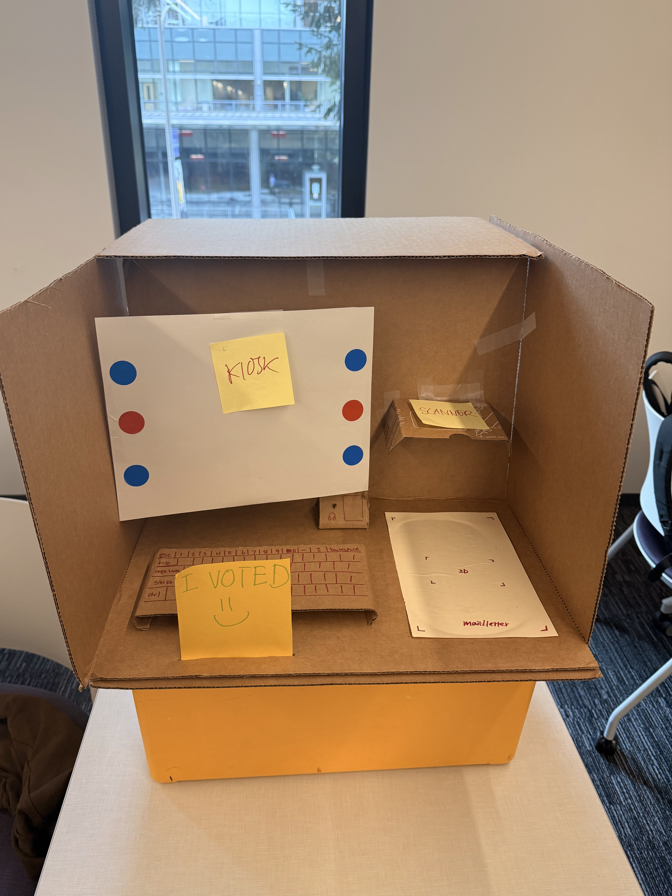
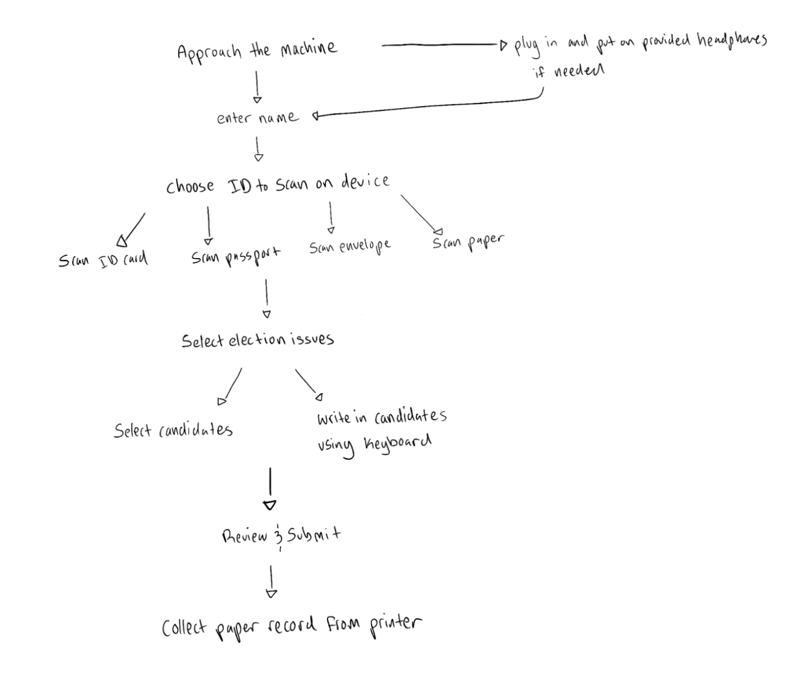
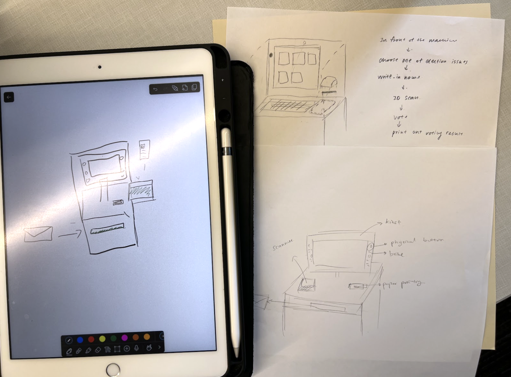

Voting Machine Redesign
A low-fidelity physical prototype for a redesigned voting machine focused on reducing steps, simplifying moving parts, and improving accessibility in the voting process.
Prompt
Design a low-fidelity voting machine prototype with fewer steps and moving parts.
The prototype needed to support selecting choices for five election issues, including a write-in capability, while also scanning multiple forms of voter ID such as a driver’s license, passport, mail, or paycheck stub.
It also needed height adjustability for seated users, Braille-labeled buttons, a headphone jack for accessibility, a paper receipt printer, and a privacy shield.
Process
Sketch separately, merge the strongest ideas, then test at class scale.
We each sketched individual concepts, shared them with the group, and merged the strongest ideas into one unified design.
We then built a cardboard prototype and tested it first within the team, then opened it up to the entire class, roughly 40 people, who rotated through and tried the prototype while we observed and operated it in response to their input.
Takeaway
Class-wide testing revealed edge cases quickly.
Testing with about 40 people in one session surfaced a much wider range of behaviors than a single outside tester would have. Edge cases we had not anticipated, like left-handed users, taller versus shorter voters, and people who skipped steps, showed up quickly and pointed to where the physical layout needed rethinking.
Prototype photos
Prototype build, flow, and early concept sketches.




Evaluation criteria
What class-wide testing helped us learn.
Feasibility. With 40 people cycling through, we quickly confirmed which physical components held up and which felt fragile or awkward at scale, particularly the ID scanner placement and the paper printer flap.
Usability. Multiple testers across the class got stuck at the same transition point between ID scanning and ballot selection, making it clear that step needed a stronger visual or physical cue.
Desirability. The privacy panels consistently got positive reactions from testers, who noted feeling more at ease than they expected from a cardboard mock-up.